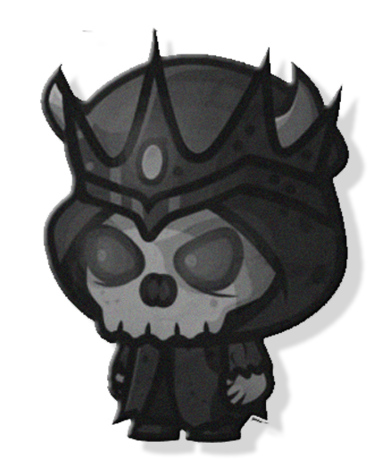
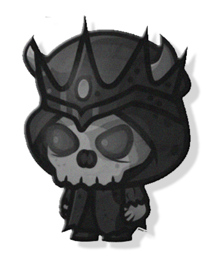

CHOQUE DE ARMAS
Instrucciones del Juego
Objetivo del juego
El objetivo del juego es ganar tantas rondas como sea posible al elegir la opción correcta entre las tres armas del juego: Piedra Dominante, Hoja Cortante y Tijera Vengadora. Cada arma tiene una relación de victoria y derrota específica con las otras.
Reglas básicas
Piedra Dominante aplasta Tijera Vengadora: La Piedra Dominante gana contra la Tijera Vengadora,
rompiéndola.
Tijera Vengadora corta Hoja Cortante: La Tijera Vengadora gana contra la Hoja Cortante,
cortándola.
Hoja Cortante envuelve Piedra Dominante: La Hoja Cortante gana contra la Piedra Dominante,
envolviéndola.
Cómo jugar
El juego se juega en 5 rondas entre el jugador y la computadora.
Ambos eligen simultáneamente una de las tres armas: Piedra Dominante, Hoja Cortante o
Tijera Vengadora.
Se revelan sus elecciones al mismo tiempo.
La relación de victoria y derrota determina al ganador de la ronda.
Se pueden jugar varias rondas hasta que se decida un ganador final.
Resultados de las rondas
Si ambos jugadores eligen la misma arma, se declara un empate y no hay ganador ni perdedor en esa
ronda.
Si un jugador elige Piedra Dominante y el otro elige Tijera Vengadora, el jugador que eligió
Piedra Dominante gana la ronda.
Si un jugador elige Tijera Vengadora y el otro elige Hoja Cortante, el jugador que eligió Tijera
Vengadora gana la ronda.
Si un jugador elige Hoja Cortante y el otro elige Piedra Dominante, el jugador que eligió Hoja
Cortante gana la ronda.
Ganar el juego
El juego continúa hasta que se decida un ganador final. El jugador que gane la mayoría de las rondas se considera el ganador del juego. Si ambos jugadores tienen la misma cantidad de victorias, se puede jugar una ronda adicional para determinar al ganador.
Estrategias y consejos
Observa las elecciones pasadas de tu oponente para tratar de predecir su siguiente
movimiento.
Intenta mezclar tus elecciones para evitar patrones predecibles.
Mantén la calma y no te dejes llevar por la emoción del juego.
 
